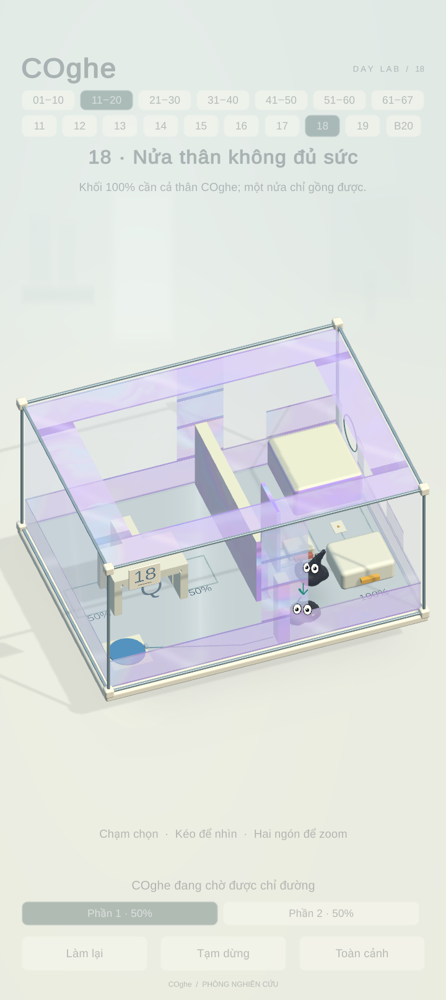
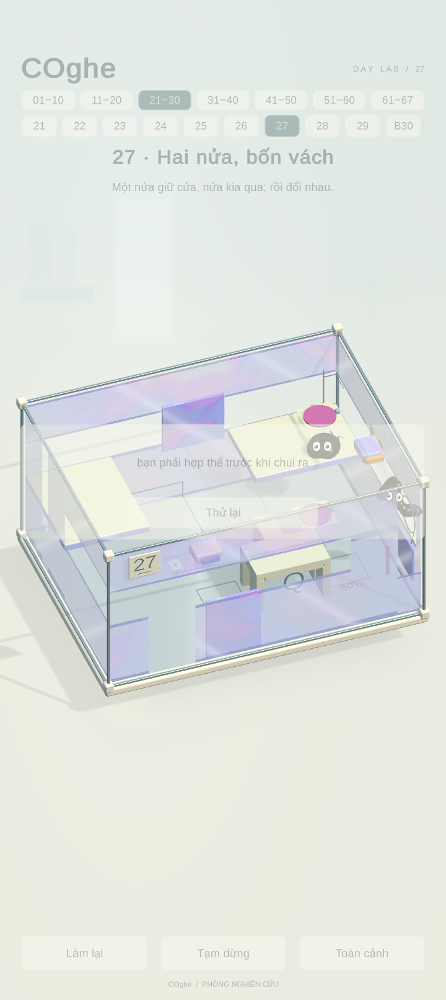
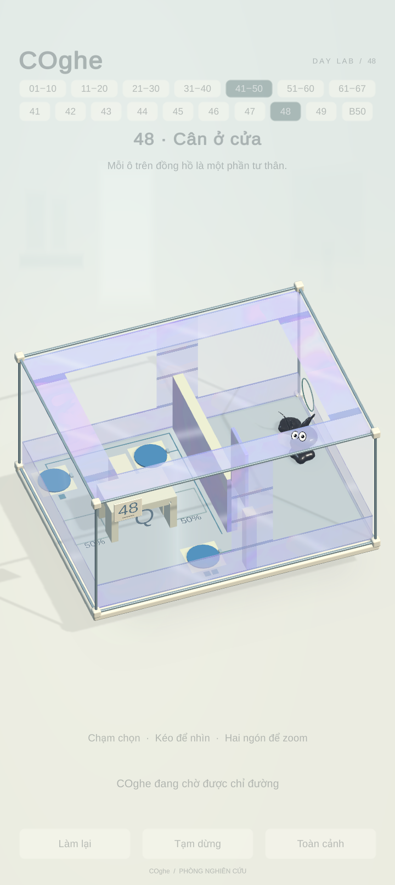
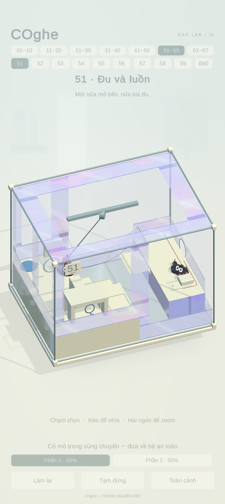
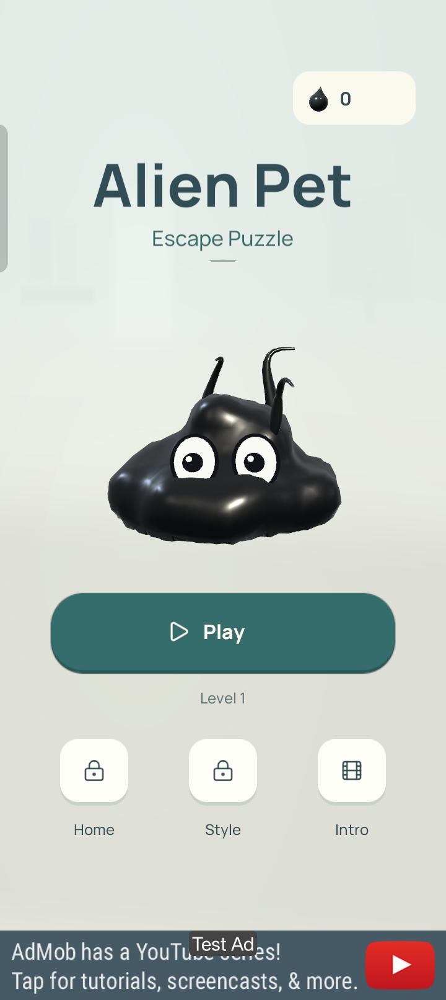
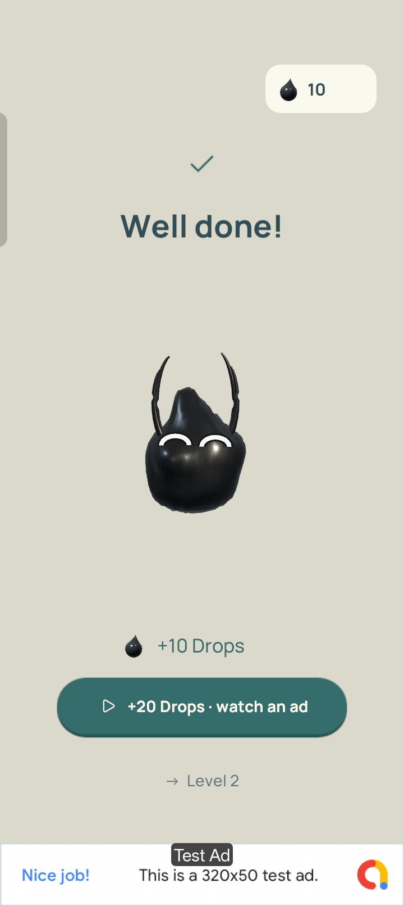
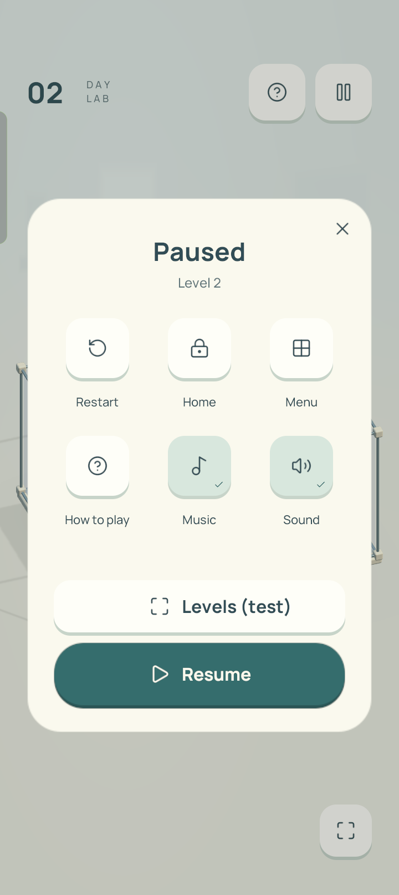

ALIEN PET: ESCAPE PUZZLE · 29/10/2026
Đã build và kiểm tra trực tiếp trên OPPO
OPPO CPH2591 · Android 15 · Mali-G52 MC2 · 720 × 1612. Bản code hiện tại trên NewGraphic, gồm nhận diện Alien Pet. Bản APK đã được cài và đối chiếu SHA-256 trên điện thoại.
61 / 65Màn đã có lượt giải đạt
6 / 6Boss đã qua
25 / 25Kiểm tra hồi quy Editor
30.1 FPSTrung bình theo số frame, lượt quét đầu
Chưa phải bản “tất cả màn đều ổn”. Bốn màn 18, 27, 48, 51 cần xử lý/kiểm tra tiếp. Đây là lượt giải theo đường đi do tác giả định sẵn, dùng thao tác chạm thật và vật lý bình thường; không ép thắng. Không đồng nghĩa đã thử mọi cách chơi hoặc đã chứng minh các màn này không thể giải.
File APK · Báo cáo chi tiết và giới hạn · CSV 65 màn · 25 bài hồi quy
Những ca cần chú ý

Màn 18 · Hai phần đứng gần nhau; các điểm chạm bị cơ thể che, không phát lệnh đi tới nhau.
Màn 27 · Khó chỉ đường về bệ hợp thể; một phần tới lỗ trước, kích hoạt đúng luật thua khi chưa hợp thể.
Màn 48 · Đã mở cơ quan và hợp thể, nhưng đường đi cuối chưa đưa toàn bộ cơ thể qua lỗ.
Màn 51 · Chọn bến đu dây lại bị xử lý thành thả xuống sàn cứu hộ; đã lặp lại hai lần.Hiệu năng
31.3 phút / 56.480 frame được lấy mẫu trong lượt quét đầu (34.6 phút thực thi các đường giải, gồm thời gian chụp ảnh). Các màn đầu khoảng 39–45 FPS; phần lớn màn sau quanh 29–30 FPS. Màn 53: 25.2 FPS, 33: 26.0, 38: 26.9, 43: 27.1. Máy đang sạc USB, nóng dần lên 39–41 °C qua lượt quét và chạy lại. Không có bằng chứng duy trì 60 FPS. Việc chụp ảnh kiểm thử có thể làm tăng một số đỉnh thời gian frame.
UI Product trên OPPO
Đã kiểm tra Menu → Play → thắng màn 1 → giữ màn thắng và nút thêm Drops → Level 2 → Pause → Restart. Game đang mở ở màn 2. Không chạy quảng cáo thưởng thật hoặc mua hàng.

Menu Alien Pet, test banner
Màn thắng và nút nhận thêm Drops
Pause của bản testKết quả từng màn
Màn 56 đạt khi sửa bộ test nhận biết COghe đã đứng đúng điểm sau khi hợp thể; không thay đổi gameplay. FPS và số lần chạm bên dưới là số liệu lượt quét đầu.
| Màn | Trạng thái | FPS | p95 ms | Chạm |
|---|
| 01 | Đạt | 38.6 | 49.0 | 1 |
| 02 | Đạt | 45.4 | 32.7 | 3 |
| 03 | Đạt | 43.9 | 32.7 | 3 |
| 04 | Đạt | 44.1 | 32.7 | 2 |
| 05 | Đạt | 43.4 | 32.7 | 3 |
| 06 | Đạt | 41.5 | 32.7 | 3 |
| 07 | Đạt | 29.7 | 49.0 | 6 |
| 08 | Đạt | 29.5 | 49.0 | 3 |
| 09 | Đạt | 28.7 | 49.0 | 6 |
| 10 | Đạt | 28.0 | 49.0 | 11 |
| 11 | Đạt | 29.9 | 49.0 | 4 |
| 12 | Đạt | 29.8 | 49.0 | 4 |
| 13 | Đạt | 29.6 | 49.0 | 3 |
| 14 | Đạt | 29.5 | 49.0 | 5 |
| 15 | Đạt | 29.8 | 49.0 | 6 |
| 16 | Đạt | 29.4 | 49.0 | 8 |
| 17 | Đạt | 29.9 | 49.0 | 18 |
| 18 | Cần xử lý | 30.4 | 49.0 | 70 |
| 19 | Đạt | 29.5 | 49.0 | 9 |
| 20 | Đạt | 30.1 | 49.0 | 7 |
| 21 | Đạt | 29.3 | 49.0 | 16 |
| 22 | Đạt | 29.4 | 49.0 | 3 |
| 23 | Đạt | 29.3 | 49.0 | 5 |
| 24 | Đạt | 29.9 | 49.0 | 5 |
| 25 | Đạt | 28.6 | 49.0 | 5 |
| 26 | Đạt | 30.0 | 49.0 | 4 |
| 27 | Cần xử lý | 29.6 | 49.0 | 49 |
| 28 | Đạt | 30.3 | 49.0 | 7 |
| 29 | Đạt | 29.8 | 49.0 | 8 |
| 30 | Đạt | 30.0 | 49.0 | 6 |
| 31 | Đạt | 30.0 | 49.0 | 9 |
| 32 | Đạt | 29.6 | 49.0 | 16 |
| 33 | Đạt | 26.0 | 49.0 | 3 |
| 34 | Đạt | 28.8 | 49.0 | 5 |
| 35 | Đạt | 28.5 | 49.0 | 4 |
| 36 | Đạt | 29.6 | 49.0 | 6 |
| 37 | Đạt | 29.7 | 49.0 | 7 |
| 38 | Đạt | 26.9 | 49.0 | 8 |
| 39 | Đạt | 30.0 | 49.0 | 8 |
| 40 | Đạt | 30.0 | 49.0 | 6 |
| 41 | Đạt | 29.9 | 49.0 | 6 |
| 42 | Đạt | 29.9 | 49.0 | 12 |
| 43 | Đạt | 27.1 | 49.1 | 16 |
| 44 | Đạt | 30.0 | 49.0 | 7 |
| 45 | Đạt | 30.1 | 49.0 | 8 |
| 46 | Đạt | 29.8 | 49.0 | 7 |
| 47 | Đạt | 30.0 | 49.0 | 18 |
| 48 | Cần xử lý | 30.1 | 49.0 | 21 |
| 49 | Đạt | 30.3 | 49.0 | 29 |
| 50 | Đạt | 29.8 | 49.0 | 8 |
| 51 | Cần xử lý | 28.9 | 49.0 | 6 |
| 52 | Đạt | 30.2 | 49.0 | 47 |
| 53 | Đạt | 25.2 | 49.1 | 13 |
| 54 | Đạt | 29.9 | 49.0 | 47 |
| 55 | Đạt | 29.6 | 49.0 | 6 |
| 56 | Đạt sau sửa bộ test | 28.9 | 49.0 | 18 |
| 57 | Đạt | 30.2 | 49.0 | 31 |
| 58 | Đạt | 29.9 | 49.0 | 11 |
| 59 | Đạt | 29.8 | 49.0 | 5 |
| 60 | Đạt | 29.8 | 49.0 | 20 |
| 61 | Đạt | 29.4 | 49.0 | 9 |
| 62 | Đạt | 29.0 | 49.0 | 16 |
| 63 | Đạt | 29.9 | 49.0 | 7 |
| 64 | Đạt | 29.6 | 49.0 | 24 |
| 65 | Đạt | 28.3 | 49.0 | 35 |